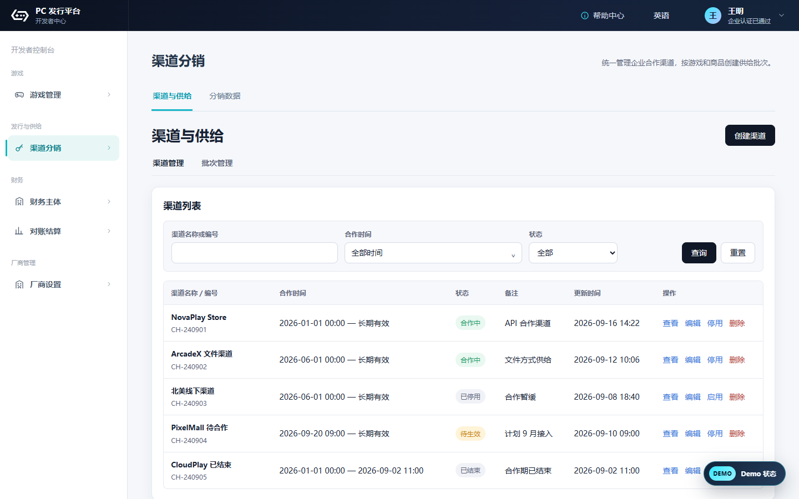
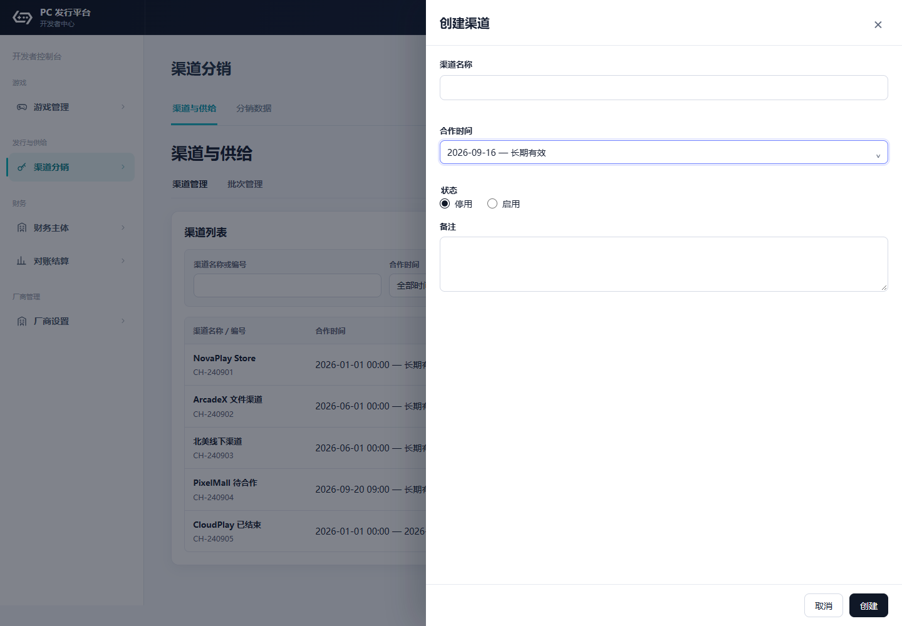
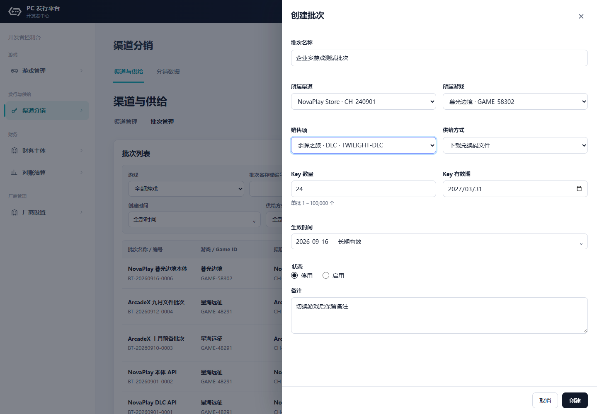
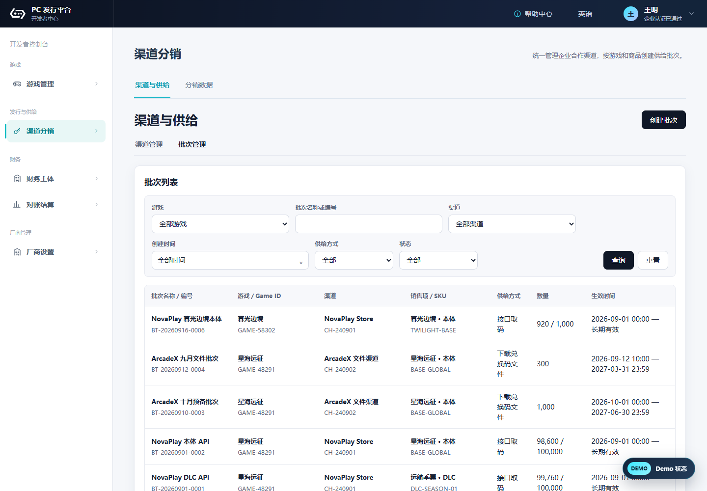
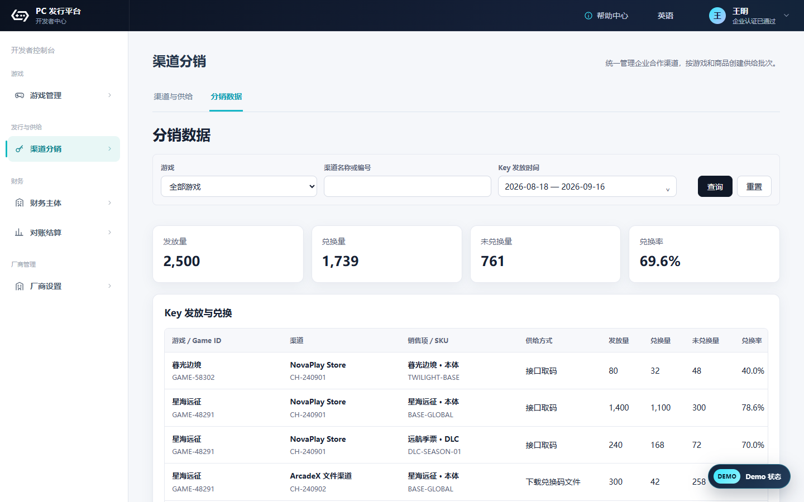

企业控制台 → 渠道分销
与游戏管理、厂商设置同层级。
无需先进入某款游戏。
渠道归企业统一维护；批次明确游戏与商品/SKU；通过文件或 API 交付，按游戏查看兑换结果。

企业控制台 → 渠道分销
与游戏管理、厂商设置同层级。
无需先进入某款游戏。

填写渠道及合作期限
一个渠道可供多款游戏复用，
无需在各游戏内重复建档。

选择游戏 → 本体 / DLC 商品/SKU
选择企业渠道及供给方式、数量和时间。
一个批次对应一个游戏、渠道与商品/SKU。

文件 首次下载 / API 按订单取码
API 需符合启用、生效及余量条件。
数量不足时，可在原 API 批次追加数量。

企业汇总 → 可按游戏、渠道筛选
查看发放量、兑换量、未兑换量及兑换率。
按游戏、渠道、商品/SKU、方式区分记录。